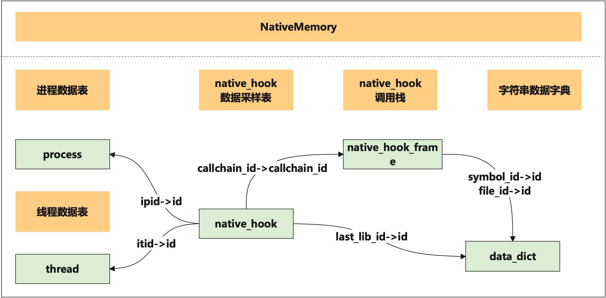
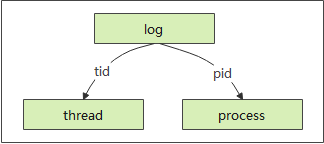

TraceStreamer数据表概述
TraceStreamer可以将trace数据源转化为易于理解和使用的数据库。用户可以通过SmartPerf界面直观的研究系统跟踪数据，也可在理解TraceStreamer生成的数据库的基础上，在TraceStreamer的交互模式或者Smartperf的数据库查询模式下，使用SQL查询语句自由组装查看用户关心的数据。下文将对TraceStreamer生成的数据库进行详细描述，给用户使用SQL查询系统跟踪数据提供帮助。
TraceStreamer输出的数据表分类
-
常规泳道图数据表

-
native memory数据源相关表
 -
perf相关数据表

-
hisysevent相关数据表

TraceStreamer输出数据库包含以下表格
| 表名称 | 作用 |
|---|---|
| app_name | 记录HiSysEvent事件的事件名与IDE部分事件的字段名为APPNAME中存放的相关信息的映射关系 |
| args | 记录方法参数集合 |
| bio_latency_sample | 记录IO操作相关方法调用，及调用栈数据 |
| callstack | 记录调用堆栈和异步调用信息，其中depth,stack_id和parent_stack_id仅在非异步调用中有效。当cookid不为空时，为异步调用，此时callid为进程唯一号，否则为线程唯一号 |
| clk_event_filter | 记录时钟相关的信息 |
| clock_event_filter | 此结构用来维护时钟事件，cpu与唯一的ID做关联 |
| cpu_measure_filter | cpu事件过滤器表 |
| cpu_usage | 记录CPU使用率事件 |
| data_dict | 记录常用的字符串，将字符串和索引关联，降低程序运行的内存占用，用作辅助数据 |
| data_type | 记录数据类型和typeId的关联关系 |
| diskio | 记录磁盘读写数据事件 |
| ebpf_callstack | 记录了采样相关信息 |
| file_system_samp | 记录了调用栈的相关信息 |
| hidump | 记录FPS（Frame Per Second）数据 |
| hisys_event_measure | 记录了HiSysEvent事件相关数据，目前HiSysEvent事件包括了异常事件，IDE事件，器件状态事件 |
| instant | 记录Sched_waking, sched_wakeup事件， 用作ThreadState表的上下文使用 |
| irq | 记录中断相关事件 |
| js_heap_edges | 记录了js内存数据类对象对应的成员的信息 |
| js_heap_files | 记录了js内存数据的名称和时间 |
| js_heap_info | 记录了js内存数据类型，如nodes和edges的字段类型和数据总数 |
| js_heap_location | 记录了js内存location节点相关数据 |
| js_heap_nodes | 记录了js内存类对象和其成员的对应关系 |
| js_heap_sample | 记录了timeline模式下的时间轴信息 |
| js_heap_string | 记录了js内存数据中的字符串 |
| js_heap_trace_function_info | 记录了timeline模式下的调用栈的每个函数信息 |
| js_heap_trace_node | 记录了timeline模式下的调用栈信息 |
| live_process | 记录了一些实时的进程中执行的一些数据 |
| log | 记录hilog打印日志数据 |
| measure_filter | 记录一个递增的filterid队列，所有其他的filter类型在获取过程中，均从此数据列表中获取下一个可用的filter_id并做记录 |
| meta | 记录执行解析操作相关的基本信息 |
| native_hook | 记录堆内存申请与释放相关的数据 |
| native_hook_frame | 记录堆内存申请与释放相关的调用栈 |
| native_hook_statistic | 记录堆内存申请与释放相关的统计信息 |
| network | 抓取网络信息传输时产生的一些相关信息 |
| paged_memory_sample | 记录内存操作相关方法调用，及调用栈数据 |
| perf_callchain | 记录Hiperf采样数据的调用栈信息 |
| perf_files | 记录Hiperf工具采集到的函数符号表和文件名 |
| perf_report | 记录Hiperf工具采集数据时的配置信息。包括 |
| perf_sample | 记录Hiperf工具的采样信息 |
| perf_thread | 记录Hiperf工具采集到的进程和线程数据 |
| process | 记录所有的进程信息 |
| process_filter | 过滤进程 |
| process_measure | 保存进程的所有计量值 |
| process_measure_filter | 将进程ID作为key1，进程的内存，界面刷新，屏幕亮度等信息作为key2，唯一确定一个filter_id |
| raw | 此数据结构主要作为ThreadState的上下文使用，这张表是sched_waking,sched_wakup, cpu_idle事件的原始记录 |
| sched_slice | 此数据结构主要作为ThreadState的上下文使用，这张表是sched_switch事件的原始记录 |
| smaps | 记录进程的内存消耗的相关信息采样 |
| stat | 此结果用来统计数据解析中各类数据的数据条数，数据和合法性，数据的匹配程度（begin-end），数据的损失等，查看此结构对应的表，可对数据源有基本的了解 |
| symbols | 记录系统调用名称和其函数指针的对应关系，trace中用addr来映射function_name来节省存储空间 |
| syscall | 记录用户空间函数与内核空间函数相互调用记录 |
| sys_event_filter | 记录所有的filter |
| sys_mem_measure | 记录了所有的系统内存相关的测量信息 |
| thread | 记录所有的线程信息 |
| thread_filter | 过滤线程 |
| thread_state | 记录线程状态信息 |
| trace_range | 记录ftrace数据与其他类型数据的时间交集，供前端展示数据时使用 |
| clock_snapshot | 时钟号和时间，时钟名的映射表 |
| datasource_clockid | 数据源和时钟号的映射表 |
表与事件来源
| 表名称 | 事件源 | 插件名 | 备注 |
|---|---|---|---|
| app_name | - | hisysevent-plugin | JSON数据源 |
| args | - | ftrace-plugin | 配合callstack使用 |
| callstack | - | ftrace-plugin | 异步或非异步的调用 |
| cpu_measure_filter | - | ftrace-plugin | cpu跟踪器，cpu频率等 |
| cpu_usage | - | cpu-plugin | cpu使用率 |
| data_dict | 通用的 | - | 所有字符串的记录 |
| data_type | 通用的 | - | 辅助表 |
| file_system_callstack | - | - | ebpf文件系统 |
| file_system_sample | - | - | ebpf文件系统 |
| frame_maps | - | ftrace-plugin | 帧渲染数据，app到RS的映射 |
| frame_slice | - | ftrace-plugin | 帧渲染数据 |
| gpu_slice | - | ftrace-plugin | gpu渲染时长 |
| hidump | - | hidump-plugin | FPS数据 |
| hisys_event_measure | - | hisysevent-plugin | JSON数据源 |
| instant | - | ftrace-plugin | waking和wakeup事件 |
| irq | - | ftrace-plugin | 记录中断事件 |
| js_heap_edges | - | arkts-plugin | js内存数据 |
| js_heap_files | - | arkts-plugin | js内存数据 |
| js_heap_info | - | arkts-plugin | js内存数据 |
| js_heap_location | - | arkts-plugin | js内存数据 |
| js_heap_nodes | - | arkts-plugin | js内存数据 |
| js_heap_sample | - | arkts-plugin | js内存数据 |
| js_heap_string | - | arkts-plugin | js内存数据 |
| js_heap_trace_function_info | - | arkts-plugin | js内存数据 |
| js_heap_trace_node | - | arkts-plugin | js内存数据 |
| live_process | - | process-plugin | Monitor数据 |
| network | - | network-plugin | Monitor数据 |
| diskio | - | diskio-plugin | Monitor数据 |
| log | - | hilog-plugin | 系统日志 |
| measure | 通用的 | - | 系统中的计量值（数值型） |
| measure_filter | 通用的 | - | 计量值的查询辅助表 |
| meta | 通用的 | - | 记录解析现场数据（解析时间，数据类型，解析工具等） |
| native_hook | - | nativehook/hookdaemon | malloc && mmap内存数据 |
| native_hook_frame | - | nativehook/hookdaemon | native_hook调用栈数据 |
| native_hook_statistic | - | nativehook/hookdaemon | malloc && mmap统计数据 |
| perf_callchain | - | perf-plugin | perf数据（非插件模式） |
| perf_files | - | - | perf数据（非插件模式） |
| perf_report | - | - | perf数据（非插件模式） |
| perf_sample | - | - | perf数据（非插件模式） |
| perf_thread | - | - | perf数据（非插件模式） |
| process | - | ftrace-plugin | 进程信息 |
| process_filter | - | ftrace-plugin | 进程计量表的辅助表 |
| process_measure | - | ftrace-plugin | 进程内存 |
| process_measure_filter | - | ftrace-plugin | process_measure的辅助表 |
| raw | - | ftrace-plugin | 线程唤醒信息 |
| sched_slice | - | ftrace-plugin | 配合现场状态表使用，dsched_switch的原始数据 |
| smaps | - | memory-plugin | 进程的内存消耗 |
| stat | 通用的 | - | 记录不同种类数据的数据量 |
| symbols | - | ftrace-plugin | 符号表（地址到字符串的映射） |
| syscall | - | ftrace-plugin | 系统调用 sys_enter/exit |
| sys_event_filter | - | ftrace-plugin | |
| sys_mem_measure | - | memory-plugin | 系统内存 |
| thread | 通用的 | - | 线程信息（常用） |
| thread_state | 通用的 | ftrace-plugin | 线程调度图（常用） |
| trace_range | 通用的 | - | trace数据的时长 |
| thread_filter | 通用的 | ftrace-plugin | 线程计量跟踪表（比较少用） |
| clock_snapshot | 通用的 | 通用的 | 时钟号和时间，时钟名的映射表 |
| datasource_clockid | 通用的 | 通用的 | 数据源和时钟号的映射表 |
表格关系图
进程表与线程表关系
当一个进程或者线程结束后，系统可能再次将该进程号或者线程号分配给其他进程或者线程，造成一个进程号或线程号代表多个进程或线程的情况。
Process和Thread表中的id字段可以唯一标识进程和线程。process表中的id在其他表中用作ipid字段。thread表中的id在其他表中用作itid字段。
thread表通过ipid字段关联process表的id字段，可以查询线程归属进程。

查询举例
-
已知pid = 123,查看当前进程下的所有线程信息,可以使用如下SQL语句：
select thread.* from thread, process where process.pid = 123 and thread.ipid = process.id
线程表与线程运行状态表关系图
thread_state表记录所有线程的运行状态信息，包含ts(状态起始时间)，dur(状态持续时间)，cpu, itid,
state（线程状态）。 thread表的id字段与thread_state表的itid字段相关联。

查询举例
-
已知tid = 123, 查看当前线程的所有运行状态信息，可以使用如下SQL语句：
select thread_state.* from thread, thread_state where thread.tid = 123 and thread.id = thread_state.itid
堆内存数据变化表关系图
native_hook表记录堆内存申请(AllocEvent)和释放(FreeEvent)数据。native_hook表通过ipid和itid字段分别与process和thread表的id字段关联，通过callChainId与native_hook_frame表的callChainId字段相关联。
native_hook表字段解释如下：
- callChainId：唯一标识一次堆内存申请或释放， 通过与native_hook_frame表关联可以拿到当前申请或释放的函数调用堆栈。
- addr：堆内存申请/释放的地址。
- native_hook_size：堆内存申请/释放的大小。
native_hook_frame表记录内存申请/释放的调用堆栈。通过callChainId区分一组调用堆栈，depth为堆栈深度，depth为0时，表示当前行为栈顶数据。

native_hook_statistic表记录内存申请/释放的统计信息。通过callChainId区分一组调用堆栈。每个统计事件将记录当前事件的callChainId，并统计当前调用栈内存分配/释放的总次数和总大小。

查询举例
-
已知tid = 123，查看当前线程的所有堆内存变化信息，可以使用如下SQL语句：
select native_hook.* from thread, native_hook where thread.tid = 123 and thread.id = native_hook.itid -
已知callchainid = 1, 查看当前内存变化调用堆栈
select * from native_hook_frame where callchain_id = 1 -
已知callchainid = 1, 查看当前内存变化调用堆栈对应的统计信息
select * from native_hook_statistic where callchain_id = 1
日志表与进程线程表关系图
log表记录日志信息。可以根据seq字段的连续性，来判断是否存在日志丢失的情况。

查询举例
-
已知tid = 123，查看当前线程的所有error级别的日志，可以使用如下SQL语句：
select * from log where tid = 123 and level = "error"
perf表之间关系图
- perf_report：此表记录Hiperf工具采集数据时的配置信息。
- perf_thread：此表记录hiperf采集到的进程和线程数据。
- perf_sample：此表中记录Hiperf工具的采样信息。sample_id唯一表识一次采样记录，与perf_callchain表中的sample_id字段相关联。thread_id为线程号。与perf_thread表中的thread_id字段相关联。event_type_id为当前采样的事件类型id，与perf_report表中的id字段相关联。
- perf_callchain：此表格记录的是调用栈信息。
- Perf_files：此表格主要存放着获取到的函数符号表和文件信息。file_id唯一表识一个文件，与perf_callchain表中的file_id字段相关联。

查询举例
-
已知同步后的时间戳为28463134340470，查询采样数据
select * from perf_sample where timestamp_trace = 28463134340470 -
已知同步后的时间戳为28463134340470，查询采样数据对应的的调用栈信息
select A.* from perf_callchain as A, perf_sample as B where B.timestamp_trace = 28463134340470 and A.sample_id = B.sample_id -
已知同步后的时间戳为28463134277762，查询采样数据的函数名及文件路径
select A.*, B.name, C.path from perf_sample as A, perf_callchain as B, perf_files as C where A.timestamp_trace = 28463134277762 and B.sample_id = A.sample_id and B.callchain_id = 0 and B.file_id = C.file_id and C.serial_id = 0 -
已知线程号为6700，查询所有的采样记录
select * from perf_sample where thread_id = 6700 -
已知进程号为7863，查询所有的采样记录
select A.* from perf_sample as A, perf_thread as B where B.process_id = 7863 and A.thread_id = B.thread_id -
查询所有采样对应的事件类型
select A.*, B.report_value from perf_sample as A, perf_report as B where A.event_type_id = B.id
帧渲染表之间的关系图
frame_slice: 记录RS(RenderService)和应用的帧渲染。
gpu_slice: 记录RS的帧对应的gpu渲染时长。
frame_maps:记录应用到RS的帧的映射关系。

查询示例
-
已知进程，查询进程对应的实际渲染帧
select * from frame_slice where ipid = 1 -
已知进程的实际渲染帧的dst为12，求其对应的RS进程的渲染帧
select * from frame_slice where id = 12 -
已知RS的渲染帧在frame_slice中所在行是14，求其对应的GPU渲染时长
select * from gpu_slice where frame_row = 14
JS内存数据表关系图
js_heap_files：记录js内存数据的文件名和文件索引

js_heap_nodes:记录js内存类对象数据
js_heap_edges:记录js内存类对象的成员数据
js_heap_trace_node:记录timeline的调用栈信息
js_heap_sample:记录timeline的时间轴信息

TraceStreamer输出数据库表格详细介绍
app_name表
表结构
| Columns Name | SQL TYPE |
|---|---|
| id | INT |
| flag | INT |
| app_name | INT |
| app_key | INT |
表描述
记录HiSysevent上报事件中的IDE相关事件中APPNAME的表关联信息。
字段详细描述
- id：用于与表hisys_event_measure表中的key_id字段做对应
- app_name：对应的事件的信息ID
- app_key：对应的事件的APPNAME字段的信息ID
args表
表结构
| Columns Name | SQL TYPE |
|---|---|
| id | INT |
| key | INT |
| datatype | INT |
| value | INT |
| argset | INT |
表描述
记录方法的参数集合。
字段详细描述
- key：键
- datatype：数据类型
- value：取值
- argset：参数集合
bio_latency_sample表
表结构
| Columns Name | SQL TYPE |
|---|---|
| id | INT |
| callchain_id | INT |
| datatype | INT |
| type | INT |
| ipid | INT |
| itid | INT |
| start_ts | INT |
| end_ts | INT |
| latency_dur | INT |
| tier | INT |
| size | INT |
| block_number | TEXT |
| path | TEXT |
| dur_per_4k | INT |
表描述
记录IO操作相关方法调用，及调用栈数据。
字段详细描述
- callchain_id：调用栈的唯一标识。与ebpf_callstack表中Callchain_id字段关联
- type：事件类型其取值为枚举类型（DATA_READ，DATA_WRITE，METADATA_READ，- METADATA_WRITE，PAGE_IN，PAGE_OUT）
- ipid：TS内部进程号
- itid：TS内部线程号
- start_ts：开始时间
- end_ts：结束时间
- latency_dur：总延迟
- tier：优先级
- size：文件大小
- block_number：数据量大小（一般为4K）
- path：路径id
- dur_per_4k：每4k数据的平均延迟
callstack表
表结构
| Columns Name | SQL TYPE |
|---|---|
| id | INT |
| ts | INT |
| dur | INT |
| callid | INT |
| cat | TEXT |
| identify | INT |
| name | TEXT |
| depth | INT |
| cookie | INT |
| parent_id | INT |
| argsetid | INT |
| chainId | TEXT |
| spanId | TEXT |
| parentSpanId | TEXT |
| flag | TEXT |
| args | TEXT |
表描述
记录调用堆栈和异步调用信息，其中depth,stack_id和parent_stack_id仅在非异步的调用中有效。当cookid不为空时，为异步调用，此时callid为进程唯一号，否则为线程唯一号。
字段详细描述
- dur：调用时长
- callid：调用者的ID，比如针对线程表里面的id
- identify：调用栈的名字，与表dataDict相关联能够取出其string值
- name：调用名称
- depth：调用深度
- parent_id：父调用的id
- spanId：分布式调用关联关系
- flag：C表示分布式调用发送方，S表示接受方
- args：分布式调用函数参数
clk_event_filter表
表结构
| Columns Name | SQL TYPE |
|---|---|
| id | INT |
| type | TEXT |
| name | TEXT |
| cpu | INT |
表描述
记录时钟信息。
字段详细描述
- Type：时钟事件类型
- Name：时钟事件名称
clock_event_filter表
表结构
| Columns Name | SQL TYPE |
|---|---|
| id | INT |
| type | TEXT |
| name | TEXT |
| cpu | INT |
表描述
此结构用来维护时钟事件，cpu与唯一的ID做关联。
主要字段描述
- Type：时钟事件类型
- Name：时钟事件名称
cpu_measure_filter表
表结构
| Columns Name | SQL TYPE |
|---|---|
| id | INT |
| type | TEXT |
| name | TEXT |
| cpu | INT |
表描述
将cpu号作为key1，cpu的频率，空闲等状态作为key2，唯一确定一个filter_id。
主要字段描述
- Id(filterid), cpu：事件名称，cpu号
cpu_usage表
表结构
| Columns Name | SQL TYPE |
|---|---|
| ts | INT |
| dur | INT |
| total_load | REAL |
| user_load | REAL |
| system_load | REAL |
| process_num | INT |
表描述
记录了与CPU使用率相关的数据。
主要字段描述
- total_load：总负荷
- user_load：用户负载
- system_load：系统负载
- process_num：线程数
data_dict表
表结构
| Columns Name | SQL TYPE |
|---|---|
| id | INT |
| data | TEXT |
表描述
此表记录了一个数据类型ID和字符串的映射。
主要字段描述
- id：索引值
- data：字符串
data_type表
表结构
| Columns Name | SQL TYPE |
|---|---|
| id | INT |
| typeId | INT |
| desc | TEXT |
表描述
此表记录了一个数据类型ID和数据描述的映射。
主要字段描述
- typeId:：数据类型id
- Desc：数据类型描述
diskio表
表结构
| Columns Name | SQL TYPE |
|---|---|
| ts | INT |
| dur | INT |
| rd | INT |
| wr | INT |
| rd_speed | REAL |
| wr_speed | REAL |
| rd_count | INT |
| wr_count | INT |
| rd_count_speed | REAL |
| wr_count_speed | REAL |
表描述
记录了与磁盘读写相关的数据。
主要字段描述
- rd_sectors_kb：读数据的速度
- wr_sectors_kb：写入数据的速度
- ts：时间戳
ebpf_callstack表
表结构
| Columns Name | SQL TYPE |
|---|---|
| id | INT |
| callchain_id | INT |
| depth | TEXT |
| ip | TEXT |
| symbols_id | INT |
| file_path_id | INT |
表描述
记录了与磁盘读写相关的数据。
主要字段描述
- callchain_id：调用栈的唯一标识。与ebpf_callstack表中Callchain_id字段关联
- depth：调用栈深度。取值为零时表示栈顶
- ip：调用栈ip
- symbols_id：调用栈函数名称, 与data_dict中的id字段关联
- file_path_id：调用栈函数所属文件路径, 与data_dict中的id字段关联
file_system_sample表
表结构
| Columns Name | SQL TYPE |
|---|---|
| callchain_id | INT |
| type | INT |
| ipid | INT |
| itid | INT |
| start_ts | INT |
| end_ts | INT |
| dur | INT |
| return_value | TEXT |
| error_code | TEXT |
| fd | INT |
| file_id | INT |
| size | INT |
| first_argument | TEXT |
| second_argument | TEXT |
| third_argument | TEXT |
| fourth_argument | TEXT |
表描述
记录了调用栈的相关信息。
主要字段描述
- callchain_id：调用栈信息ID与file_system_callstack表中call_chain_id字段相关联
- type：对应文件操作open，close，read，write
- ipid：线程所属的进程ID
- start_ts：开始时间
- end_ts：结束时间
- dur：耗时
- return_value：文件操作的返回值
- error_code：文件操作发生错误时的错误码
- fd：文件描述符fd
- file_id：当type为open，close时为其操作的文件路径，当type为read，write时为固定字段（null）
- size：在type为read，write时对应的文件的读或者写的大小
- first_argument：参数一
- second_argument：参数二
- third_argument：参数三
- fourth_argument：参数四
hidump表
表结构
| Columns Name | SQL TYPE |
|---|---|
| id | INT |
| ts | INT |
| fps | INT |
表描述
此表记录了设备的帧率信息，fps。
相关字段描述
- fps：帧率值
hisys_event_measure表
表结构
| Columns Name | SQL TYPE |
|---|---|
| serial | INT |
| ts | INT |
| name_id | INT |
| key_id | INT |
| type | INT |
| int_value | REAL |
| string_value | TEXT |
表描述
记录所有的system event事件的相关数据，及其相关表的映射信息。
相关字段描述
- serial：每条数据过来携带唯一一条id作为标识
- name_id：存放事件对应的ID，与data_dict表相关联可以取出对应的字段
- key_id：存放事件包含的字段的ID，与表app_name的id字段相关联，找到app_name表的 id字段对应行的app_key字段与表data_dict表相关联取出对应的字段
- type：存放事件所包含的字段的值所属的类型为int型还是string（0为int，1为string）
- int_value：存放本事件所包含的字段的int型的值
- string_value：存放本事件所包含的字段的string型的值
instant表
表结构
| Columns Name | SQL TYPE |
|---|---|
| ts | INT |
| name | TEXT |
| ref | INT |
| wakeup_from | INT |
| ref_type | TEXT |
| value | REAL |
表描述
记录了系统中的waking和wakeup事件。
字段描述
- ts：唤醒时间
- name：唤醒事件的名称
- ref：索引号
- wakeup_from：唤醒当前线程的内部线程号（itid）
- ref_type：描述了value字段的类型（一般取值为itid）
- value：一般为当前线程的内部线程号取值
irq表
表结构
| Columns Name | SQL TYPE |
|---|---|
| id | INT |
| ts | INT |
| dur | INT |
| callid | INT |
| cat | TEXT |
| name | TEXT |
| depth | INT |
| cookie | INT |
| parent_id | INT |
| argsetid | INT |
| chainId | TEXT |
| spanId | TEXT |
| parentSpanId | TEXT |
| flag | TEXT |
| args | TEXT |
表描述
记录中断相关事件。
相关字段描述
- dur：调用中断时长
- callid：调用中断者的ID，比如针对线程表里面的id
- cat：调用栈数据类型（取值范围：irq，softirq...）
- name：调用中断的名称
- depth：中断调用的深度
- parent_id：父调用中断的id
- spanId：分布式调用中断关联关系
js_heap_edges表
表结构
| Columns Name | SQL TYPE |
|---|---|
| file_id | INT |
| edge_index | INT |
| type | INT |
| name_or_index | INT |
| to_node | INT |
| from_node_id | INT |
| to_node_id | INT |
表描述
记录js内存数据类对象对应的成员的信息。
相关字段描述
- file_id：文件ID
- edge_index：成员的索引号
- type：成员的类型，取值范围为js_heap_info表中的edge_types
- name_or_index：数据名称，取值为js_heap_string表中的下标索引
- to_node：此成员指向的类对象在nodes数组中的索引
- from_node_id：类对象ID，该类对象指向此成员数据
- to_node_id：此成员指向到的类对象nodes数组中的ID
js_heap_files表
表结构
| Columns Name | SQL TYPE |
|---|---|
| id | INT |
| file_name | TEXT |
| start_time | INT |
| end_time | INT |
| pid | INT |
表描述
记录了js内存数据的文件名称和时间。
相关字段描述
- id：文件ID
- file_name：文件名称
- start_time：数据抓取的起始时间
- end_time：数据抓取的终止时间
- pid：进程号
js_heap_info表
表结构
| Columns Name | SQL TYPE |
|---|---|
| file_id | INT |
| key | TEXT |
| type | INT |
| int_value | INT |
| str_value | TEXT |
表描述
记录了js内存数据类型，如nodes和edges的字段类型和数据总数。
相关字段描述
- file_id：文件ID
- key：类型名称
- type：数据类型索引
- int_value：int类型的数据值，如count类型数据
- str_value：string类型的数据值，如typename
js_heap_location表
表结构
| Columns Name | SQL TYPE |
|---|---|
| file_id | INT |
| object_index | INT |
| script_id | INT |
| line | INT |
| column | INT |
表描述
记录了js内存location节点相关数据，此表目前无抓取到的数据。
相关字段描述
- file_id：文件ID
- object_index：与location关联的类对象的索引，取值为js_heap_nodes的下标索引
- script_id：关联到的类对象所在文件的绝对路径ID
- line：在类对象所在的文件中的行号
- column：在类对象所在的文件中的列号
js_heap_nodes表
表结构
| Columns Name | SQL TYPE |
|---|---|
| file_id | INT |
| node_index | TEXT |
| type | INT |
| name | INT |
| id | TEXT |
| self_size | INT |
| edge_count | INT |
| trace_node_id | INT |
| detachedness | INT |
表描述
记录了js内存数据中类对象的数据。
相关字段描述
- file_id：文件ID
- node_index：类对象的索引
- type：类对象的类型
- name：类对象的名称
- id：类对象的唯一ID
- self_size：该类对象所有成员的大小（以字节为单位）
- edge_count：该类对象指向的类成员的个数
- trace_node_id：该类对象关联到js_heap_trace_node表中的调用栈ID
- detachedness：是否可以从window全局对象访问此节点，0表示是，1表示否
js_heap_sample表
表结构
| Columns Name | SQL TYPE |
|---|---|
| file_id | INT |
| timestamp_us | INT |
| last_assigned_id | INT |
表描述
记录了timeline模式下的时间轴信息。
相关字段描述
- file_id：文件ID
- timestamp_us：时间信息
- last_assigned_id：当前时间点的id
js_heap_string表
表结构
| Columns Name | SQL TYPE |
|---|---|
| file_id | INT |
| file_index | INT |
| string | TEXT |
表描述
记录了js内存数据中的字符串。
相关字段描述
- file_id：文件ID
- file_index：索引
- string：对应的字符串信息
js_heap_trace_function_info表
表结构
| Columns Name | SQL TYPE |
|---|---|
| file_id | INT |
| function_index | INT |
| function_id | INT |
| name | INT |
| script_name | INT |
| script_id | INT |
| line | INT |
| column | INT |
表描述
记录了timeline模式下的调用栈的每个函数信息。
相关字段描述
- file_id：文件ID
- function_index：函数索引
- function_id：函数ID
- name：函数名称
- script_name：关联到的类对象所在文件的绝对路径名称
- script_id：关联到的类对象所在文件的绝对路径ID
- line：在类对象所在的文件中的行号
- column：在类对象所在的文件中的列号
js_heap_trace_node表
表结构
| Columns Name | SQL TYPE |
|---|---|
| file_id | INT |
| id | INT |
| function_info_index | INT |
| count | INT |
| size | INT |
| parent_id | INT |
表描述
记录了timeline模式下的调用栈的信息。
相关字段描述
- file_id：文件ID
- id：调用栈节点索引
- function_info_index：函数信息索引
- count：调用栈个数
- size：调用栈大小
- parent_id：调用栈父节点
live_process表
表结构
| Columns Name | SQL TYPE |
|---|---|
| ts | INT |
| dur | INT |
| cpu_time | INT |
| process_id | INT |
| process_name | TEXT |
| parent_process_id | INT |
| uid | INT |
| user_name | TEXT |
| cpu_usage | REAL |
| pss_info | INT |
| thread_num | INT |
| disk_writes | INT |
| disk_reads | INT |
表描述
记录了一些实时的进程中执行的一些数据（Monitor）。
主要字段描述
- process_id：进程id
- process_name：进程名
- parent_process_id：父进程的id
- uid：用户id
- user_name：用户名
- cpu_usage：cpu使用率
- pss_info：进程信息
- thread_num：线程数量
- disk_writes：磁盘写量
- disk_reads：磁盘读量
log表
表结构
| Columns Name | SQL TYPE |
|---|---|
| seq | INT |
| ts | INT |
| pid | INT |
| tid | INT |
| level | TEXT |
| tag | TEXT |
| context | TEXT |
| origints | INT |
表描述
记录日志信息。
关键字段描述
- Seq：日志序号，保证日志解析的准确性
- Ts：打印日志时间
- Pid：日志的进程号
- Tid：日志的线程号
- Level：日志级别
- Tag：日志标签
- Context：日志内容
measure表
表结构
| Columns Name | SQL TYPE |
|---|---|
| type | TEXT |
| ts | INT |
| dur | INT |
| value | INT |
| filter_id | INT |
表描述
记录所有的计量值。
关键字段描述
- type：固定字段（measure）
- ts：事件时间
- dur：该值持续的时长
- value：数值
- filter_id：对应filter表中的ID
measure_filter表
表结构
| Columns Name | SQL TYPE |
|---|---|
| id | INT |
| type | TEXT |
| name | TEXT |
| source_arg_set_id | INT |
表描述
记录一个递增的filterid队列，所有其他的filter类型在获取过程中，均从此数据列表中获取下一个可用的filter_id并做记录。
字段详细描述
过滤分类（type），过滤名称（key2），数据ID(key1)。
数据ID在process_measure_filter, sys_event_filter中作为id。
meta表
表结构
| Columns Name | SQL TYPE |
|---|---|
| name | TEXT |
| value | TEXT |
表描述
此表记录了数据解析或导出时的一些现场数据，比如使用的TraceStreamer版本， 工具的发布时间，数据解析的时间，数据的持续时长，以及原始数据的格式。
主要字段描述
- Name：指定元数据的key
- Value：指定元数据的value
native_hook表
表结构
| Columns Name | SQL TYPE |
|---|---|
| id | INT |
| callChainId | INT |
| ipid | INT |
| itid | INT |
| event_type | TEXT |
| sub_type_id | NUM |
| start_ts | INT |
| end_ts | INT |
| dur | INT |
| addr | INT |
| heap_size | INT |
| all_heap_size | INT |
| current_size_dur | INT |
| last_lib_id | INT |
表描述
记录native_hook抓取的某个进程的堆内存，内存映射相关数据。
关键字段描述
- callChainId：唯一标识一条native_hook数据
- event_type：事件类型取值范围（AllocEvent,FreeEvent,MmapEvent, MunmapEvent）
- sub_type_id：子事件类型(只有sub_type字段为MmapEvent时，该字段才会有值)
- start_ts：申请内存开始时间
- end_ts：释放内存时间
- Dur：申请内存活跃时间
- Addr：申请内存地址
- mem_size：申请或释放内存大小
- all_mem_size：从采集数据开始到当前时刻，申请并活跃的内存总量。 event_type为AllocEvent或者FreeEvent时，表示活跃的堆内存总量。当event_type为MmapEvent或者MunmapEvent时，表示活跃的映射内存总量
- current_size_dur：表示当前活跃内存总量的持续时间
- last_lib_id：函数调用栈他最后一个函数所属的文件路径，除了文件名中带musl和libc++
native_hook_frame表
表结构
| Columns Name | SQL TYPE |
|---|---|
| id | INT |
| callchain_id | INT |
| depth | INT |
| symbol_id | INT |
| file_id | INT |
| offset | INT |
| symbol_offset | INT |
表描述
记录了内存的申请和释放的堆栈。
相关字段描述
- callchain_id：标识一组调用堆栈
- depth：调用栈深度
- symbol_id：函数名
- file_id：函数所属文件
native_hook_statistic表
表结构
| Columns Name | SQL TYPE |
|---|---|
| id | INT |
| callchain_id | INT |
| ipid | INT |
| ts | INT |
| type | INT |
| apply_count | INT |
| release_count | INT |
| apply_size | INT |
| release_size | INT |
表描述
该表记录了内存申请/释放的统计信息。
关键字段描述
- callchain_id：内存分配的回调链id
- ipid：进程id
- ts：统计数据上报时间
- type：事件类型，0代表malloc事件，1代表mmap事件
- apply_count：当前调用栈内存分配总次数
- release_count：当前调用栈内存释放总次数
- apply_size：当前调用栈累计分配总大小
- release_size：当前调用栈累计释放总大小
network表
表结构
| Columns Name | SQL TYPE |
|---|---|
| ts | INT |
| dur | INT |
| tx | INT |
| rx | INT |
| tx_speed | REAL |
| rx_speed | REAL |
| packet_in | INT |
| packet_in_sec | REAL |
| packet_out | INT |
| packet_out_sec | REAL |
| net_type | TEXT |
表描述
记录了网络数据传输相关的信息。
主要字段描述
- tv_sec：时间，秒为单位
- tv_nsec：时间，纳秒为单位
- tx_bytes：网络数据的写入量
- rx_bytes：网络数据的读取量
paged_memory_sample表
表结构
| Columns Name | SQL TYPE |
|---|---|
| id | INT |
| callchain_id | INT |
| type | INT |
| ipid | INT |
| start_ts | INT |
| end_ts | INT |
| dur | INT |
| size | INT |
| addr | TEXT |
| itid | INT |
表描述
记录了网络数据传输相关的信息。
主要字段描述
- callchain_id： 取值相同的一组数据，表示一个完整的调用栈
- type：事件类型
- ipid：TS内部进程号
- start_ts：开始时间
- end_ts：结束时间
- dur：持续时间
- size：操作页数
- itid：TS内部线程号
perf_callchain表
表结构
| Columns Name | SQL TYPE |
|---|---|
| id | INT |
| callchain_id | INT |
| depth | INT |
| vaddr_in_file | INT |
| file_id | INT |
| symbol_id | INT |
| name | TEXT |
表描述
记录了Hiperf采样数据的调用栈信息。
主要字段描述
- callchain_id：标识一组调用堆栈
- depth：调用栈深度
- vaddr_in_file：函数在文件中的虚拟地址
- file_id：与PerfFiles中的file_id字段相关联
- symbol_id：与PerfFiles中的symbol_id相关联
- name：函数名
perf_files表
表结构
| Columns Name | SQL TYPE |
|---|---|
| id | INT |
| file_id | INT |
| serial_id | INT |
| symbol | TEXT |
| path | TEXT |
表描述
记录Hiperf工具采集到的函数符号表和文件名。
主要字段描述
- file_id：文件编号
- serial_id：一个文件中可能有多个函数，serial_id表示函数的编号
- symbol：函数名
- path：文件路径
perf_report表
表结构
| Columns Name | SQL TYPE |
|---|---|
| id | INT |
| report_type | TEXT |
| report_value | TEXT |
表描述
记录Hiperf工具采集数据时的配置信息。包括：抓取的事件类型，抓取数据的命令， 抓数据时指定的进程名称。
主要字段描述
- report_type：数据类型。取值只有三种类型：config_name（事件类型）, workload（抓取的进程名）, cmdline（抓取命令）
- report_value：对应类型的取值
perf_sample表
表结构
| Columns Name | SQL TYPE |
|---|---|
| id | INT |
| callchain_id | INT |
| timestamp | INT |
| thread_id | INT |
| event_count | INT |
| event_type_id | INT |
| timestamp_trace | INT |
| cpu_id | INT |
| thread_state | TEXT |
表描述
记录Hiperf工具的采样信息。
主要字段描述
- timestamp：未进行时钟源同步的时间戳
- thread_id：线程号
- event_count：采样统计
- event_type_id：事件类型编号。与PerfReport表的id字段相关联
- timestamp_trace：时钟源同步后的时间戳
- cpu_id：cpu核编号
- thread_state：线程状态。采样对应Sched_Waking事件时，为Runing;对应Sched_Switch事件时，为Suspend。其余事件类型，为“-”
perf_thread表
表结构
| Columns Name | SQL TYPE |
|---|---|
| id | INT |
| thread_id | INT |
| process_id | INT |
| thread_name | TEXT |
表描述
记录Hiperf工具采集到的进程和线程数据。
主要字段描述
- thread_id：线程号
- process_id：进程号
- thread_name：线程名
process表
表结构
| Columns Name | SQL TYPE |
|---|---|
| id | INT |
| ipid | INT |
| type | TEXT |
| pid | INT |
| name | TEXT |
| start_ts | INT |
| switch_count | INT |
| thread_count | INT |
| slice_count | INT |
| mem_count | INT |
表描述
记录了进程相关数据。
关键字段描述
- id：进程在数据库重新重新定义的id，从0开始序列增长
- ipid：TS内部进程id
- type：固定取值：process
- pid：进程的真实id
- name：进程名字
- start_ts：开始时间
- switch_count：统计内部有多少个线程有切换
- thread_count：统计其线程个数
- slice_count：进程内有多个线程有slice数据
- mem_count：进程是否有内存数据
process_filter表
表结构
| Columns Name | SQL TYPE |
|---|---|
| id | INT |
| type | TEXT |
| name | TEXT |
| ipid | INT |
表描述
将进程ID作为key1，进程的内存，界面刷新，屏幕亮度等信息作为key2，唯一确定一个filter_id, filter_id同时被记录在filter表中。
主要字段描述
- id：进程id
- type：固定取值：process_filter
- name：进程名
- ipid：该进程表中的id与process表中的id相关联
process_measure表
表结构
| Columns Name | SQL TYPE |
|---|---|
| type | TEXT |
| ts | INT |
| value | NUM |
| filter_id | INT |
表描述
保存进程的内存，堆栈值等所有计量值信息。
字段详细描述
- ts：事件时间
- value：数值
- filter_id：对应process_measure_filter表中的ID
process_measure_filter表
表结构
| Columns Name | SQL TYPE |
|---|---|
| id | INT |
| type | TEXT |
| name | TEXT |
| ipid | INT |
表描述
将进程ID作为key1，进程的内存，界面刷新，屏幕亮度等信息作为key2，唯一确定一个filter_id, filter_id同时被记录在measure_filter表中。
字段详细描述
- type：固定取值：process_measure_filter
- name：cpu状态名
- ipid：进程内部编号
raw表
表结构
| Columns Name | SQL TYPE |
|---|---|
| id | INT |
| type | TEXT |
| ts | INT |
| name | TEXT |
| cpu | INT |
| itid | INT |
表描述
记录了系统中的waking、wakup、cpu_idel、cpu_frequency数据。
相关字段描述
- type：固定字段（raw）
- name：调度名称（取值：cpu_idle，sched_wakeup，sched_waking）
- cpu：事件发生在哪个CPU
- itid：时间对应哪个utid
sched_slice表
表结构
| Columns Name | SQL TYPE |
|---|---|
| id | INT |
| type | TEXT |
| ts | INT |
| dur | INT |
| ts_end | INT |
| cpu | INT |
| itid | INT |
| end_state | TEXT |
| priority | INT |
表描述
此数据结构主要作为ThreadState的上下文使用，这张表是sched_switch事件的原始记录。
主要字段描述
- ts：事件发生事件
- type：固定字段（sched_slice）
- dur：状态持续时长
- ts_end：状态结束时长
- cpu：事件发生在哪个cpu
- itid：事件对应哪个utid
- end_state：线程的终结状态
smaps表
表结构
| Columns Name | SQL TYPE |
|---|---|
| id | INT |
| timestamp | INT |
| start_addr | TEXT |
| end_addr | TEXT |
| dirty | INT |
| swapper | INT |
| resident_size | INT |
| pss | INT |
| virtaul_size | INT |
| reside | REAL |
| protection_id | INT |
| path_id | INT |
表描述
记录进程的内存消耗的相关信息采样。
主要字段描述
- id：状态持续时长
- timestamp：事件发生事件
- start_addr：内存段地址的起始位置
- end_addr：内存段地址的结束位置
- dirty：其他进程共享的被写的页的大小 + 已被改写的私有页面的大小
- swapper：存在于交换分区的数据大小
- resident_size：实际分配的内存大小
- pss：平摊计算后的实际物理使用内存
- virtaul_size：虚拟内存空间的大小
- reside：实际分配的内存大小与虚拟内存空间的大小的比
- protection_id：内存段的权限id与表data_dict的id字段相关联
- path_id：如果区域是从文件映射的，则这是文件的名称对应的id序号与表data_dict的id字段相关联
stat表
表结构
| Columns Name | SQL TYPE |
|---|---|
| event_name | TEXT |
| stat_type | TEXT |
| count | INT |
| serverity | TEXT |
| source | TEXT |
表描述
此结果用来统计数据解析中各类数据的数据条数，数据和合法性，数据的匹配程度（begin-end），数据的损失等，查看此结构对应的表，可对数据源有基本的了解。
主要字段描述
- event_name：数据类型
- stat_type：数据状态
- count：数据条数
- severity：严重级别
- source：数据来源
symbols表
表结构
| Columns Name | SQL TYPE |
|---|---|
| id | INT |
| funcname | TEXT |
| addr | INT |
表描述
此表记录了被调用函数与其地址的映射关系。
相关字段描述
- funcname：系统调用名称
- adr：系统调用地址
syscall表
表结构
| Columns Name | SQL TYPE |
|---|---|
| syscall_num | INT |
| type | TEXT |
| ipid | INT |
| ts | INT |
| ret | INT |
表描述
记录用户空间函数与内核空间函数相互调用记录。
相关字段描述
- syscall_num：系统调用的序号
- type：固定取值：enter或者exit
- ipid：线程所属的进程ID
- ts：时间戳
- ret：返回值，在type为exit时有效
sys_event_filter表
表结构
| Columns Name | SQL TYPE |
|---|---|
| id | INT |
| type | TEXT |
| name | TEXT |
表描述
记录所有的filter。
相关字段描述
- type：文件类型
- name：文件名
sys_mem_measure表
表结构
| Columns Name | SQL TYPE |
|---|---|
| type | TEXT |
| ts | INT |
| value | INT |
| filter_id | INT |
表描述
记录系统内存与系统虚拟内存。
相关字段描述
- ts：事件时间
- value：数值
- filter_id：对应filter表中的ID
thread表
表结构
| Columns Name | SQL TYPE |
|---|---|
| id | INT |
| itid | INT |
| type | TEXT |
| tid | INT |
| name | TEXT |
| start_ts | INT |
| end_ts | INT |
| ipid | INT |
| is_main_thread | INT |
| switch_count | INT |
表描述
记录了线程相关数据。
字段详细描述
- id：线程在数据库重新重新定义的id，从0开始序列增长
- itid：TS内部线程id
- type：固定字段（thread）
- tid：线程号
- name：线程名
- start_ts：开始时间
- end_ts：结束时间
- ipid：线程所属的进程id, 关联process表中的ID
- is_main_thread：是否主线程，主线程即该线程实际就是进程本身
- switch_count：当前线程的切换次数
thread_filter表
表结构
| Columns Name | SQL TYPE |
|---|---|
| id | INT |
| type | TEXT |
| name | TEXT |
| itid | INT |
表描述
将线程ID作为key1，线程的内存，界面刷新，屏幕亮度等信息作为key2，唯一确定一个filter_id, filter_id同时被记录在filter表中。
主要字段描述
- id：线程id
- type：线程类型
- name：线程名称
- itid：该表中的tid与thread表中的tid相关联
thread_state表
表结构
| Columns Name | SQL TYPE |
|---|---|
| id | INT |
| type | TEXT |
| ts | INT |
| dur | INT |
| cpu | INT |
| itid | INT |
| tid | INT |
| pid | INT |
| state | TEXT |
表描述
记录了线程状态相关的数据。
字段详细描述
- id：线程状态在数据库中的id，从0开始序列增长
- ts：该线程状态的起始时间
- dur：该线程状态的持续时间
- cpu：该线程在哪个cpu上执行（针对running状态的线程）
- itid：该状态所属的线程id, 关联线程表中的id
- tid：线程号
- pid：进程号
- state：线程实际的的状态值
'R', Runnable状态
"S", interruptible sleep
"D", uninterruptible sleep
"D-IO", uninterruptible io
"D-NIO", uninterruptible nio
"Runing", Runing状态
"I", interrupted
"T", Traced
"X", ExitedDead
"Z", Zombie
"I", CloneThread
"I", TaskKilled
"DK",
"DK-IO",
"DK-NIO",
"TK", TracedKill
"R", WakeKill
"P", Parked
"R+", ForeGround
clock_snapshot表
表结构
| Columns Name | SQL TYPE |
|---|---|
| clock_id | INT |
| ts | INT |
| clock_name | TEXT |
表描述
时钟号和时间，时钟名的映射表。
关键字段描述
- clock_id：时钟号
- ts：时钟快照报的时间
-
clock_name：时钟号对应的时钟名字
时钟快照是用来对齐不同时钟号的时间
比如，时钟号1的时间100，和时钟号2的时间200对齐
则时钟号为2 的250，转换为时钟号1的时间后，为150
datasource_clockid表
表结构
| Columns Name | SQL TYPE |
|---|---|
| data_source_name | TEXT |
| clock_id | INT |
表描述
数据源和时钟号的映射表。
关键字段描述
- data_source_name：数据源的名称，和数据源的插件名保持一致
-
clock_id：时钟号，对应clock_snapshot中的时钟号
这个表是用来告诉IDE，不同的事件源的事件，原始时钟号是多少，在数据库中保存的事件，通常是转换为boottime后的时间，但有些情况下，IDE仍然需要知道原始的时钟号是怎样的
frame_slice表
表结构
| Columns Name | SQL TYPE |
|---|---|
| ts | INT |
| vsync | INT |
| ipid | INT |
| itid | INT |
| callstack_id | INT |
| dur | INT |
| src | TEXT |
| dst | INT |
| type | INT |
| flag | INT |
| depth | INT |
| frame_no | INT |
表描述
应用的实际渲染帧和期望渲染帧的开始时间，持续时长，以及RenderService和App之间的关联关系。
关键字段描述
- callstack_id：该帧数据对应着callstack表的调用栈所在的行数
- dur：该帧渲染时长（当数据不完整时，改行数据为空）
- src：该帧是被哪一帧（该表中对应的行数）触发的，有多个值时，用逗号分割
- dst：该帧对应的渲染帧是哪一行
- type: 0 说明该行数据是实际渲染帧， 1 说明该行数据是期望渲染帧
- flag: 空时，为不完整的数据；0 表示实际渲染帧不卡帧， 1 表示实际渲染帧卡帧， 2 表示数据不需要绘制（没有frameNum信息）
- depth：预留
- frame_no：预留
frame_maps表
表结构
| Columns Name | SQL TYPE |
|---|---|
| ts | INT |
| src_row | INT |
| dst_row | INT |
表描述
该表记录了app到RenderService的帧的映射关系，同frame_slice表中的src映射到dst的关系。
关键字段描述
- src_row：frame_slice表中app的帧所在的行
- dst_row：frame_slice表中RenderService的帧所在的行
gpu_slice表
表结构
| Columns Name | SQL TYPE |
|---|---|
| frame_row | INT |
| dur | INT |
表描述
该表记录了每一帧数据在GPU上的渲染时长。
关键字段描述
- frame_row：frame_slice表中渲染帧所在的行
- dur：帧渲染时长
trace_range表
表结构
| Columns Name | SQL TYPE |
|---|---|
| start_ts | INT |
| end_ts | INT |
表描述
该表记录了解析开始时间以及结束时间。
关键字段描述
- start_ts：trace的开始时间，纳秒为单位
- end_ts：trace的结束时间，纳秒为单位